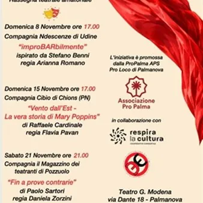

da dom 8 nov a sab 21 nov
Palma a Teatro - Rassegna teatrale amatoriale
Rassegna di teatro amatoriale. Tutti gli appuntamenti si terranno presso il Teatro Gustavo Modena di Palmanova. Ingresso libero con prenotazione segreteria@propalma.it Domenica 8 Novembre ore 17.00 Compagnia Ndescenze di Udine "improBARbilmente" ispirato da Stefano Benni Regia…
 Indicazioni
Indicazioni
- Costi e prenotazioni
- Costo non indicato · Prenotazione non indicata
- Programma
- Programma da verificare. Apri la fonte ufficiale per orari e possibili aggiornamenti.
- In caso di maltempo
- Nessuna indicazione specifica pubblicata.
- Note
- Acquisito automaticamente dalla fonte.
L’EVENTO
Descrizione completa
Rassegna di teatro amatoriale.
Tutti gli appuntamenti si terranno presso il Teatro Gustavo Modena di Palmanova.
Ingresso libero con prenotazione segreteria@propalma.it
Domenica 8 Novembre ore 17.00
Compagnia Ndescenze di Udine "improBARbilmente" ispirato da Stefano Benni
Regia: Arianna Romano Ispirato all’immaginario surreale e ironico di Stefano Benni e al suo celebre "Bar sotto il Mare", questo spettacolo nasce da un lavoro collettivo degli attori, che hanno rielaborato e reinventato personaggi, situazioni e atmosfere del racconto originale. Il bar diventa così un luogo sospeso e sorprendente, in cui si intrecciano storie diverse: dialoghi, monologhi e scene corali danno voce a una galleria di clienti eccentrici, ironici, malinconici o grotteschi, sempre accompagnati dalla presenza discreta ma essenziale del barista. Tra racconti già esistenti e nuovi episodi inventati, lo spettacolo costruisce un mosaico teatrale vivace e imprevedibile, capace di restituire la magia quotidiana e straordinaria di un luogo in cui tutto può accadere.
Domenica 15 Novembre ore 17.00
Compagnia Cibìo di Chions (PN) "Vento dall'Est - la vera storia di Mary Poppins" di Raffaele Cardinale
Regia: Ilaria Pavan P.L. Travers, la celebre e inflessibile autrice di Mary Poppins, entra negli studi Disney con il compito di approvare l'adattamento cinematografico della sua opera. Quello che dovrebbe essere un semplice confronto professionale con registi, musicisti e sceneggiatori, si trasforma lentamente in qualcosa di più profondo e inaspettato: un viaggio nella sua memoria, tra le stanze sbiadite dell'infanzia e le ferite ancora vive del passato. Tra sogni infranti, silenzi sospesi e parole mai dette, prende forma una narrazione che si snoda su tre piani: il presente di una Travers adulta nei Disney Studios, il fragile e petico universo della sua infanzia e la scintillante macchina hollywoodiana impegnata a trasformare in leggenda un mito destinato a restare. Attraverso musica, emozioni e immaginazione, Vento dall’Est racconta come le storie possano diventare ponti tra ciò che siamo stati e ciò che possiamo diventare. Un racconto che ci accompagia dolcemente nel cuore delle nostre ferite e ci ricorda che a volte è proprio nelle fiabe... che troviamo il modo per ricominciare.
Sabato 21 Novembre ore 21.00
Compagnia Il Magazzino dei Teatranti di Pozzuolo "Fin a prove contrarie" di Paolo Sartori
Regia: Daniela Zorzini Nello spettacolo si affrontano importanti temi, fra i quali: la violenza sulle donne, il dramma moderno come fenomeno sociale, rapporti tossici e affettività, situazioni paradossali della giustizia umana. Il testo volge in racconto drammatico il problema dell'affettività femminile in rapporto a relazioni tossiche con uomini capaci di abusi, manipolazioni ed efferatezze nei confronti delle donne. La testimonianza resa di fronte al pubblico riassume i tipi più frequenti che s’incontrano nei processi per maltrattamento e violenza ma li declina con una sensibilità e uno scavo psicologico lontani da ogni tentazione didascalica: come se il pubblico li ascoltasse per la prima volta. Il racconto a più voci, sottolinea la valenza di tragico fenomeno sociale, oltre che di dramma personale. Lo spettacolo è in lingua friulana, un valore aggiunto in quanto questa lingua dolce ed aspra, restituisce la verità e la crudezza del dramma, in un caleidoscopio di movimenti, di parole urlate e di corpi che sanno trasmettere le emozioni più profonde e toccanti. La regia va proprio in questa direzione, proponendo sette diverse voci femminili che presentano il dramma nella sua coralità e attualità, sette attrici che hanno voluto fortemente essere testimoni di una storia vera alla quale l'autore si è ispirato e alla quale la regia ha voluto ridare la voce moltiplicandola in quella di tante donne che non hanno più vita. È una testimonianza che vuole scuotere gli animi, far riflettere, non dimenticare e far sentire forte e presente le voci, le grida, le proteste, la dignità, la libertà. La VITA, di tutte le donne.
IL PROGRAMMA
Programma e orari
Appuntamenti raccolti dalle fonti elencate. Dove manca un orario, non è ancora disponibile in questa scheda.
Programma pubblicato
- Dal 2026-11-08 al 2026-11-21
INFORMAZIONI UTILI
Prima di partire
- Controllare la fonte prima di partire.
ORGANIZZAZIONE